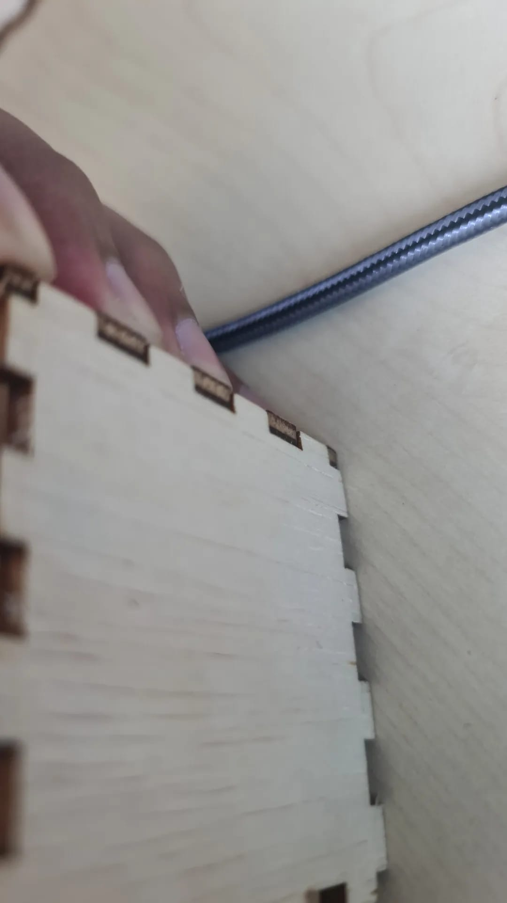
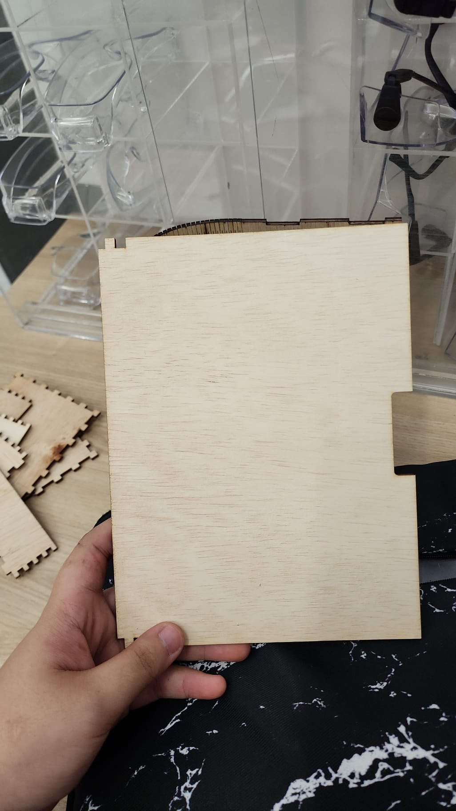
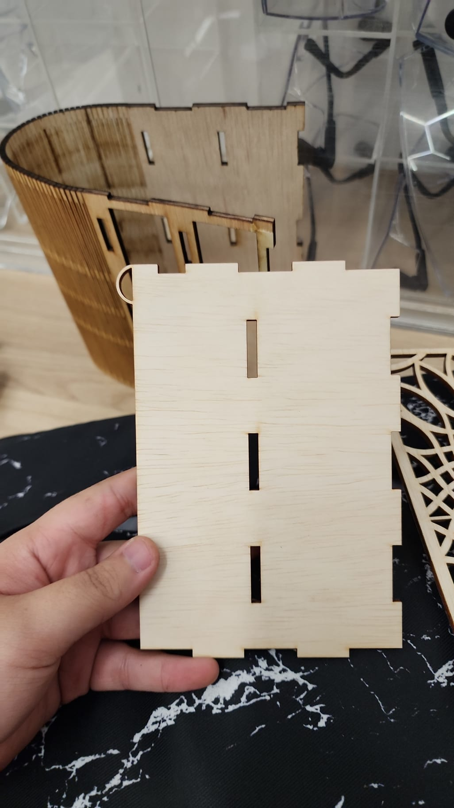
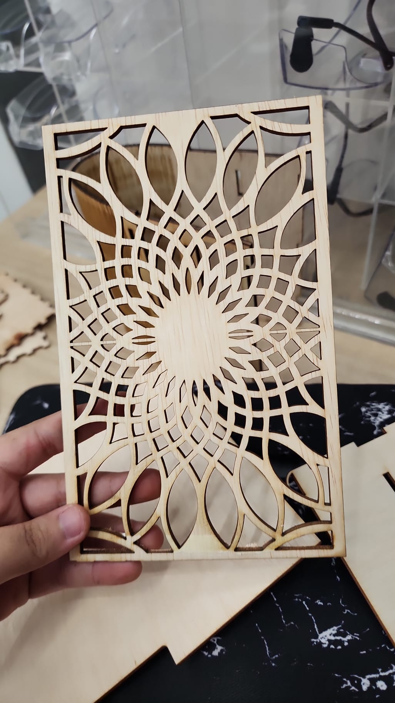

Laser Cutting Assignment
Our class was were assigned to create a make-up box using the laser cutting machine within the term break. The material given to use with plywood ranging from 3mm thick to 5mm thick.
I did 3 sketch because of the size and improvement.
First Sketch
Parameters:

Fusion Design:
Second Sketch
Parameters:

Fusion Design:
Third Sketch
Parameters:

Fusion Design:
Flower Pattern design
Fusion Design:
Among the 3 design that I did, I end up picking the Third Sketch as it was small, easy to make and there is 2 storage
To me the hardest part of the fusion segment wasn’t creating the correct dimension for the drawer or the butt joint. But instead it was creating the flower pattern.
I had to take an image from online and transfer the drawing to fusion and draw it from there, the straight line was fairly simple, the curve part is the most troublesome among all of it. Base on the image, 90% of it has curve part which took me awhile to draw it.
I was only able to use the laser cutting machine once school reopen but I still manage to complete everything on time.
There were a few problem when I was using the laser cutting machine.
Firstly, the plywood given to us wasn’t flat, most if not all of the plywood that was offer to us was bent which really make the cutting process difficult as well as make the joining of the whole prototype together difficult.

Secondly, I only came to find out that the thickness of the plywood have a relationship with the butt joint dept. For example, the plywood that were given to you or you find it in the waste bin is 3.5mm and your butt joint depth is 3mm. If you were to glue the joint together, the piece won’t be flush with each other.
To overcome all the challenges that I came across was I have to improvise on the spot.
In order to ensure the plywood is flat, is just submerged it under hot water for a couple of minutes or hours. Once you remove it place it on the floor and place something heavy on top of it and let it dry. In which the plywood will be flat or almost flat. I did that for all my plywood and it took me a day or 2 but I manage to make 80% of the plywood flat whereas the other 20% of the plywood was slightly bent but it was better than before.

In order that the joint was flush as possible was to ensure that the depth of the butt joint is equal to the thickness of the plywood. Originally, all my butt joint depth was 3mm and I have to change the whole butt joint depth to 3.5mm.
Before

After

Base on the picture above, there is a slight difference on the buttjoint. The before picture buttjoint wasn't flush as the thickness doesn't correlates witht the depth of the buttjoint but after some adjustment and testing the buttjoint is flush as the thickness and the depth of the buttjoint is equal as u can see in the after picture.
Once I manage to solve all the problem that I have encounter through my test cut. I finally did my cutting on my actually design.



I didn't take the actual video of the process because I forget to. But here the image of the final piece.


There are alot to improve on the final product. Such as the design and the hinge, mainly the hinge as it didn't work as I wanted to work as because I wasn't able to open the cover without using any force and being very cautions with it.
To summarise everything, I had gain so much knowledge from this assignment and it really has improve my skills alot. I had a lot of fun more than I could ever imagine.